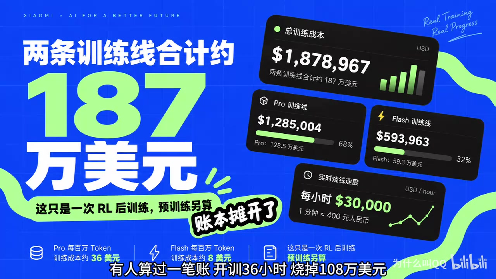
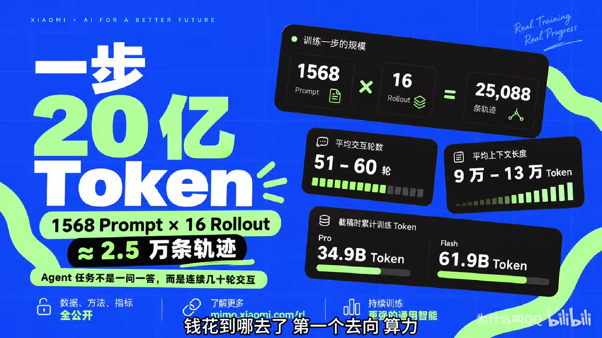
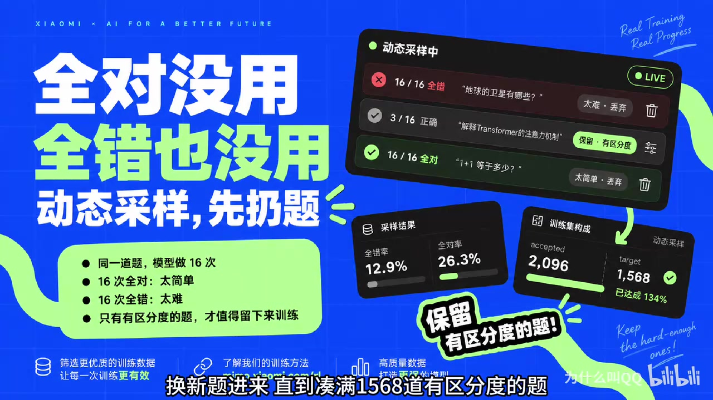
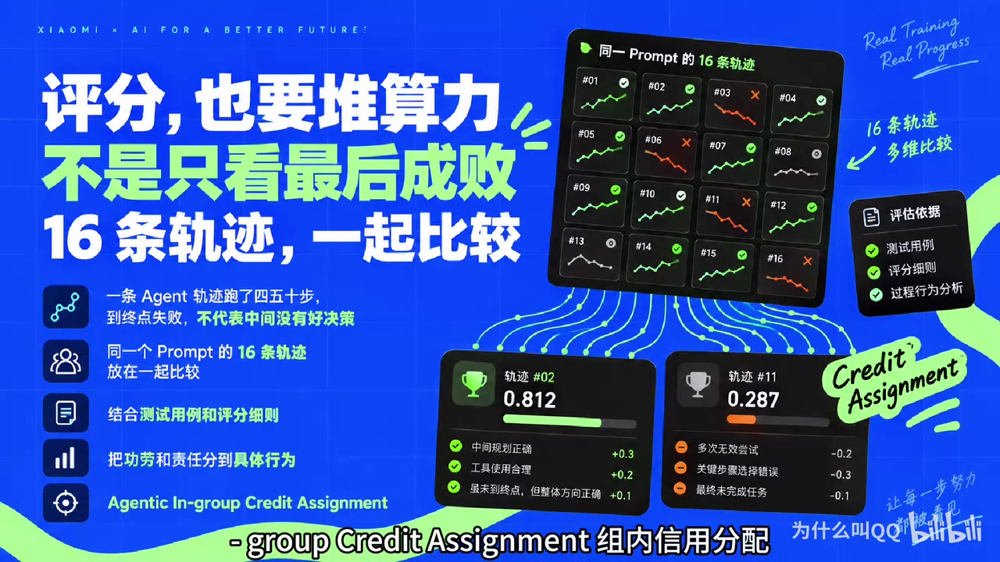
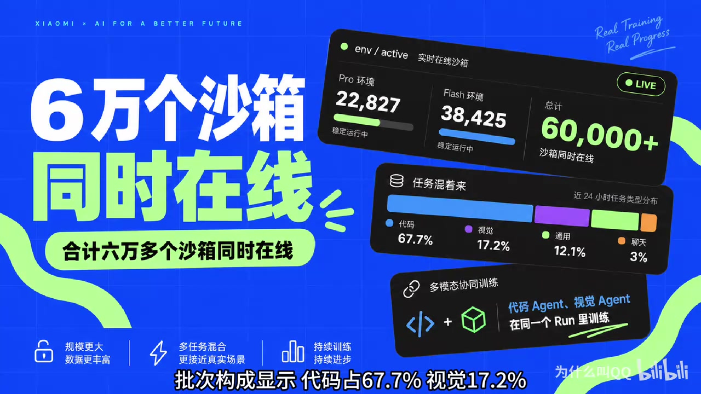
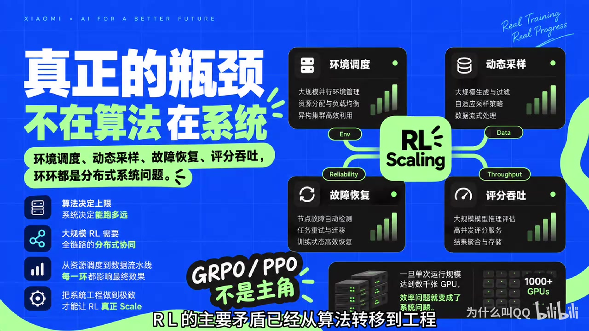

01结论先行
这场直播真正展示的不是“用多少 GPU 跑一个 RL 算法”，而是如何把采样、环境、评分、训练和故障恢复组成一台持续运转的强化学习机器。规模越大，算法正确性越依赖系统的一致性和可靠性。
多次采样、几十轮工具交互和超长上下文，使 rollout 与环境执行消耗大量算力。
全对或全错时 relative advantage 接近零，必须动态补采有区分度的任务。
轨迹越旧，行为策略与当前策略差距越大，梯度偏差和方差越高。
环境、验证器与信用分配决定几十轮行动能否转化为可学习的反馈。
reward 上升必须与独立评测、长度、entropy、KL、staleness、环境成功率和 verifier 分歧联合判断。
02视频证据与后训练全景
2.1 关键数字快照
| 维度 | 视频快照 | 技术含义 |
|---|---|---|
| 总训练成本 | 约 187.9 万美元 | 两条 RL 后训练线累计成本，不含预训练 |
| 消耗速度 | 约 3 万美元/小时 | 视频换算约人民币 21 万元/小时 |
| 单步采样 | 1,568 × 16 | 共 25,088 条候选轨迹 |
| 单步 Token | 约 20 亿 | 多轨迹、长上下文和多轮交互叠加 |
| 平均交互 | 51～60 轮 | 反复调用工具、读取反馈和修正计划 |
| 平均上下文 | 9万～13万 Token | 轨迹历史与环境输出持续累积 |
| 在线沙箱 | 60,000+ | Pro 22,827；Flash 38,425 |
| 任务构成 | 67.7 / 17.2 / 12.1 / 3% | 代码 / 视觉 / 通用 / 聊天 |

2.2 训练闭环
采样层
任务调度、推理、工具调用和环境交互。主要风险是长尾轨迹、环境故障和资源竞争。
信号与学习层
Verifier、reward、advantage、policy loss 和权重同步。主要风险是奖励失真与策略分布不一致。
2.3 为什么一步能消耗 20 亿 Token
每个 Prompt 生成 16 条轨迹，一步合计 25,088 条。Agent 任务不是一问一答，而是持续执行：
思考 → 调工具 → 读取结果 → 修正计划 → 再调工具 → …… → 完成
2.4 一个 RL Step 到底是什么
这里的 step 是一次外层 RL 训练迭代：先用某个策略版本收集一批经验，再评分、计算 advantage，并用这些经验完成一轮训练。它不是一条轨迹中的行动步，也不等于一次 optimizer.step()。
| 层级 | 在这里怎么理解 | 主要影响 |
|---|---|---|
| RL step / iteration | 一次“采样 → 评分 → 训练 → 新策略版本”的外循环 | 更新节奏、数据新鲜度、整轮成本 |
| Rollout batch | 本轮保留的 1,568 × 16 = 25,088 条轨迹 | Prompt 覆盖、组内比较、总体梯度估计 |
| Minibatch | 从 rollout batch 中取出的一小部分训练数据 | 单次反向传播的梯度噪声和显存占用 |
| Optimizer step | 一个或多个 microbatch 累积梯度后，真正改变一次参数 | 参数每次移动的方向与幅度 |
| Epoch | 对本轮 rollout batch 完整训练一遍；可能重复多个 PPO epoch | 同一批在线经验被复用多少次 |
Step 大小为什么会影响训练
数据层面的稳定
更多 Prompt 提高任务覆盖，减少单批数据构成的偶然偏斜；更多同题 Rollout 提供成功、失败和部分成功的对照，使 reward 与 advantage 的估计更可靠。
优化器层面的稳定
更大的 minibatch 会降低单次参数更新的梯度噪声，但不能补充新的任务、探索路径或组内对照，因此不能替代更大的 rollout batch。
| 增大的量 | 直接收益 | 主要代价 |
|---|---|---|
| Prompt 数量 | 增加任务广度与训练分布覆盖 | 采样、环境执行和评分成本上升 |
| 每题 Rollout 数量 | 增加同题探索深度与组内比较质量 | 轨迹可能重复，边际收益递减 |
| Minibatch 大小 | 让每次 optimizer update 的梯度更平滑 | 显存增加；固定数据量下更新次数减少 |
| 整个 RL step | 总体梯度方向更有代表性、指标波动更小 | 更新延迟、数据陈旧、故障损失和单步成本增加 |
2.5 三个关键机制
完全异步
生成、环境执行、评分和训练并行推进，减少 GPU 和服务互相等待。
动态采样
过滤全对和全错的 Prompt，维持组内差异和有效梯度。
组内信用分配
比较同一 Prompt 的多条轨迹，将结果信号下沉到更具体的行为。
完全异步流水线 · 00:02:40–00:03:12
“完全异步”是指任务生成、环境交互、评分、训练与权重同步不再按整批设置全局栅栏。上游完成一条或一小批数据，就放入队列交给下游；不同阶段持续消费和生产，慢轨迹不会让所有设备一起停下来。
同步：Rollout 全部完成 ─→ 全部评分 ─→ 全部训练 ─→ 更新权重 ─→ 下一轮
异步：Rollout v12 ─→ 评分 ─→ 队列 ─→ Learner v14
Rollout v13 ─→ 评分 ─→ 队列 ─┘ └─→ 发布 v15
新任务继续进入，多个阶段在时间上重叠
动态采样 · 00:03:13–00:03:52
16 / 16 全对
对当前模型太简单，组内 reward 没有差异，relative advantage 接近零。
0 / 16 全对
可能太难，也可能是环境或 verifier 异常；同样不能直接产生有效组内信号。

组内信用分配 · 00:04:24–00:04:53

2.6 扩展的不只是 GPU


2.7 后训练方法全景
| 阶段 | 数据形式 | 训练信号 | 在线采样 | 典型用途 |
|---|---|---|---|---|
| SFT | prompt, target | Token 交叉熵 | 否 | 格式、基本能力、工具协议 |
| DPO 等偏好优化 | prompt, chosen, rejected | 相对偏好损失 | 否 | 风格、帮助性、安全对齐 |
| RLHF / RLAIF | Prompt + 偏好模型 | 学习到的 reward | 是 | 开放式质量目标 |
| RLVR | Prompt + 可验证答案/测试 | 程序或规则 reward | 是 | 数学、代码、逻辑 |
| Agentic RL | 环境 + 多轮轨迹 | 结果、过程与工具奖励 | 是 | 代码、搜索、工具调用 Agent |
单轮 RLVR ≈ Contextual Bandit
模型一次生成完整答案，通常使用 exact match、编译器或单元测试给终局 reward。
Agentic RL ≈ MDP
每一步行动改变后续状态、可观察信息和最终回报，信用分配更困难。
03算法与系统：GRPO、动态采样与异步训练
3.1 GRPO 的基本计算
Reward 高于组平均的轨迹被提高概率，低于平均的轨迹被降低概率；无需为每个状态单独训练 critic。
Clip 限制单次策略变化。DeepSeekMath 用 group baseline 取代 PPO critic，以降低显存与系统复杂度。
3.2 动态采样的收益与代价
直接收益
- 提高有效 Prompt 数量
- 改善梯度信噪比
- 稳定 batch 间有效样本规模
需要额外监控
- 原始分布 vs 入选分布
- 各数据源全对/全错率
- Quota、接收率与补采次数
- Verifier failure 比例
3.3 长度增长不等于能力增长
3.4 异步、Staleness 与训练—推理不一致
3.4.1 同步训练为什么浪费
整批生成 → 统一评分 → 训练 → 更新权重。Batch 内 policy version 一致，但所有 worker 都必须等待最长轨迹。
Generation 与 training 解耦，减少空转；代价是必须持续处理旧轨迹、部分轨迹与数据完整性。
| 时刻 | 同步流水线 | 完全异步流水线 |
|---|---|---|
| T1 | 所有生成节点运行；learner 等待 | 生成 v12 轨迹；learner 同时训练更早到达的数据 |
| T2 | 快任务已经完成，但等待最慢轨迹 | 已完成轨迹立即评分并进入训练队列，长任务继续运行 |
| T3 | 开始统一评分；生成节点可能等待 | 生成、环境、评分和训练四个阶段同时处于工作状态 |
| T4 | 全批训练结束后统一发布新权重 | Learner 周期发布新版本；worker 在安全边界更新权重 |
为什么异步后 “step” 边界会变模糊
同步系统里，第 k 个 step 的轨迹通常都由 θₖ 生成，并在训练完成后统一得到 θₖ₊₁。完全异步时，learner 可能已经更新到 θₖ₊₂，队列里仍有 θₖ 生成的轨迹；因此仪表盘上的 step 更像调度、统计或 checkpoint 边界，而不一定是全系统同时停下再开始的物理边界。
3.4.2 Staleness 是算法指标
轨迹由 policy version k 生成、learner 在训练时已推进到 k+s，其中 s 就是版本延迟。它不是单纯的队列延时，而会直接改变梯度估计。
- 行为策略
μ与当前策略πθ差距扩大 - Importance ratio 重尾，梯度方差上升
- PPO / GRPO 的近似 trust region 语义变弱
- 旧轨迹强化当前模型已不再会走的行为
常用控制手段
- 限制最大 policy lag，调节 rollout / training 资源比例
- 丢弃或降权旧样本，截断 importance sampling
- 切分 partial rollout，并限制其进入 batch 的占比
- 维护多 policy version，确保单条轨迹内部一致
3.4.3 长轨迹如何切片训练
Agent 轨迹可能包含几十轮交互和十几万 Token，难以作为一个计算单元直接完成前向与反向传播。工程上经常把它拆成较短片段，但必须区分直接裁剪和保留关联的切片。
| 处理方式 | 具体含义 | 主要问题 |
|---|---|---|
| Truncation 直接截断 | 达到最大长度后停止生成，尾部不再保留 | 终局结果缺失；若误当普通失败，可能诱导模型过早结束 |
| Training chunk 训练切片 | 先完成整条轨迹并计算 reward / advantage，再将 Token 或 turn 拆成多个计算片段 | 必须保留上下文、mask、位置和轨迹归属，不能当作独立 episode |
| Partial rollout 跨 step 续跑 | 保存环境与轨迹状态，在后续 step 恢复并继续执行 | 会引入 policy version、staleness、回报回传与重要性修正问题 |
完整轨迹：Prompt → Turn 1 → …… → Turn 100 → 最终奖励
训练切片：Segment A（1～25） ┐
Segment B（26～50） ├─ 物理上分开计算，逻辑上仍是一条轨迹
Segment C（51～75） ┤
Segment D（76～100）┘三种常见训练路径
切片必须携带的信息
- 原始 trajectory ID 与片段位置
- 前序上下文或可恢复的模型/环境状态
- 生成该片段的 policy version
- old logprob、action / observation mask
- reward、return 与 advantage 的归属
与 minibatch 的关系
一条完整轨迹可以产生多个 training segment，片段再进入不同 microbatch；若采用梯度累积，多个 microbatch 共同形成一次 optimizer step。物理计算单位可以是短片段，统计与奖励单位仍然可以是完整轨迹。
3.4.4 相同权重也可能不是同一策略
| 不一致来源 | 后果 |
|---|---|
| FP8 rollout / BF16 training | 相同权重产生不同 logits 与 token probabilities |
| SGLang/vLLM / Megatron/FSDP | Kernel、算子顺序或数值精度不同 |
| Mask、position id、padding、template | 条件上下文实际不一致 |
| MoE expert routing | 数值微差导致选择不同专家 |
| 文本清洗或重新 tokenize | 训练 token 不再对应采样 token |
| 多轮上下文拼接差异 | Rollout 与训练看到不同 history |
On the Rollout-Training Mismatch 将“同权重、不同执行语义”视为隐式 off-policy，并用 truncated importance sampling 修正：
04Agentic RL 与指标诊断
4.1 为什么它比数学 RLVR 难
数学 RLVR 常见形式是“一次生成答案 → exact match”。代码 Agent 则是一个不断改变外部状态的长时序过程：
读 issue → 搜索代码 → 修改文件 → 运行测试 → 读报错 → 再修改 → 完成Action 是结构化工具调用，observation 来自外部环境；每一步都会改变后续可见信息与可行动空间。
失败既可能来自策略判断，也可能来自工具协议、依赖、网络、超时或 verifier，必须先区分责任边界。
4.2 三种信用分配粒度
| 粒度 | 方法 | 优点 | 主要问题 |
|---|---|---|---|
| Trajectory | 最终 reward 广播到整条轨迹 | 简单、成本低 | 无法定位关键中间步骤 |
| Turn | 每轮 action / observation 估计 advantage | 更符合多轮 MDP | 需要稳定状态与回报定义 |
| Step / Process | 测试增量、过程模型或反事实评分 | 信号最细 | 复杂，且更容易被利用 |
4.3 先审计 Verifier，再调 Optimizer
常见 Reward Hacking
- 修改或绕过测试
- 硬编码样例答案
- 利用超时或异常退出
- 迎合 rubric 表面词汇
- 过拟合单一 LLM judge
Verifier 防线
- 隐藏测试与 adversarial test
- 不同模型或规则交叉验证
- 审计高 reward / 低 eval 轨迹
- 区分环境异常与任务失败
- 隔离 verifier 私有逻辑
4.4 指标诊断：从曲线定位问题
| 指标 | 正常含义 | 危险信号 | 优先排查 |
|---|---|---|---|
reward_mean | 训练分布平均奖励 | Reward 涨、独立 eval 不涨 | Reward hacking、污染、调度漂移 |
pg_loss | 当前 batch 策略梯度目标 | 长期近 0 或突然放大 | 零 advantage、mask、ratio |
entropy | 策略探索程度 | 快速塌缩；或升高伴随乱码 | Clip、温度、reward 尺度、数据单一 |
grad_norm | 数值稳定性 | 尖峰、NaN、跨卡不一致 | 异常 batch、混合精度、optimizer |
KL / train_infer_diff | 策略偏移与两引擎一致性 | 同权重仍持续增大 | Kernel、精度、mask、MoE routing |
avg_staleness | 样本平均版本延迟 | 均值与 P95 同时上升 | Worker 配比、队列、长尾轨迹 |
clip_fraction | 触发 PPO clip 的 token 比例 | 接近 0 或长期饱和 | 学习率、policy lag、advantage scale |
| Ratio / ESS | Rollout 数据对当前策略是否有效 | Ratio 重尾、ESS 持续下降 | Off-policy drift、量化、staleness |
| 全对率 / 全错率 | 无组内差异的 Prompt 比例 | 两端持续上升 | Curriculum、难度、verifier |
| Accepted / Target | 凑齐有效 batch 的补采量 | 补采倍数持续扩大 | 数据枯竭、环境故障、难度漂移 |
| Length / Truncation | 推理预算使用情况 | 错误答案变长、截断率升高 | 长度偏差、overlong reward |
| Env success / timeout | 环境可用性 | 某数据源失败集中 | 镜像、依赖、网络、配额 |
pg_loss 的 reduction、normalization、mask 和 token 权重可能不同；entropy 也不是越高越好，过低代表探索消失，过高可能只是无效随机性。4.5 四种典型症状
检查 verifier exploitation、数据泄漏和任务分布变化。优先抽取高 reward / 低 eval 轨迹。
比较正确与错误样本长度，并在固定 Token 预算下评估 accuracy。
先核对 token ids、mask、position id 和 logprob 一致性，再调学习率。
用旧 checkpoint 重放，检查镜像、依赖、网络、工具权限与 hidden tests。
05实践路线、工具与研究边界
5.1 建议的第一次实训练路线
先做“小模型 + 单轮可验证 RLVR + 同步 GRPO”，证明数据、奖励和 loss 一致，再逐步增加动态采样、mismatch 修正与多轮 Agent。
只采样，不更新
- 0.5B～3B 模型 + 几千道可验证任务
- 跑通 Prompt → G completions → verifier → reward → 日志
- 测清 pass@1/pass@G、全对/全错率、长度与截断
- 单独记录 verifier 失败率和随机种子方差
最小 GRPO 闭环
- 同步 on-policy，group size 4～8，确定性程序 reward
- 较低学习率，冻结 eval 集
- 保存 rollout/train logprob、mask 与 policy version
- 验收：能在小 batch 上手工复算 advantage 与 policy loss
四个高信息量消融
- 动态采样关 / 开
- Sample-level / token-level loss
- Group size 4 / 8 / 16
- 无修正 / TIS 或 ratio mask
每次只改变一个变量，并固定 rollout Token 预算。
进入 Agentic RL
- 选择有稳定单元测试的代码任务，只开放少量原子工具
- 记录每轮 action / observation、工具延迟与 exit code
- 固定环境 hash、仓库 commit，跟踪测试增量、超时和 flaky
- 前置条件：环境可重放后，再研究 turn-level credit assignment
5.2 工具与阅读路线
框架选择
| 框架 | 适合场景 | 关注点 |
|---|---|---|
| Hugging Face TRL | 单机或小规模入门 | SFT、DPO、GRPO 接口直观 |
| verl | 研究分布式 RL 数据流 | FSDP/Megatron、vLLM/SGLang、DAPO/DrGRPO |
| OpenRLHF | 熟悉 Ray + DeepSpeed 的团队 | 大规模 RLHF 与 vLLM 调度 |
| AReaL | 专门研究异步 RL | Staleness、异步采样和吞吐 |
建议阅读顺序
- PPO：Clipped surrogate objective 与 on-policy 更新。
- DeepSeekMath / GRPO：Group baseline 如何取代 critic。
- DeepSeek‑R1：RLVR 与 reasoning scaling 的整体框架。
- DAPO：动态采样、clip、loss reduction 与 overlong shaping。
- Dr. GRPO：长度偏差与“推理涌现”的判断陷阱。
- MiMo‑V2‑Flash 技术报告：重点阅读 4.3 与 4.6。
- AReaL / DORA：异步训练与 staleness。
- Rollout-Training Mismatch：系统差异如何破坏 on-policy 假设。
- Turn-Level Credit Assignment：多轮 Agent 信用分配。
回看视频时值得追问的十个问题
- 实际使用 GRPO、PPO 还是内部变体？
- Advantage 是 trajectory、turn 还是 token 粒度？
- 同组 16 条轨迹是否来自同一 policy version？
- Fully async 允许的最大 staleness 是多少？
- Partial rollout 如何跨 step 计算 return 和 importance ratio？
- Rollout 与 training 的 logprob mismatch 如何校正？
- MoE routing 是否在两侧重放？
- 动态采样是否按数据源做 quota 或 reweight？
- 组内信用分配的中间信号来自测试、规则还是 learned judge？
- Reward 增长能否在冻结、不可见的 held-out eval 上复现？